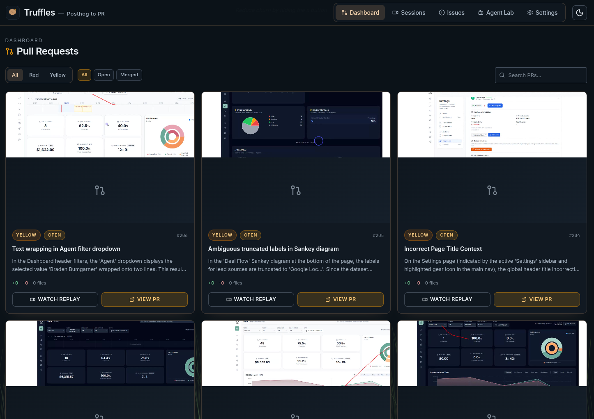
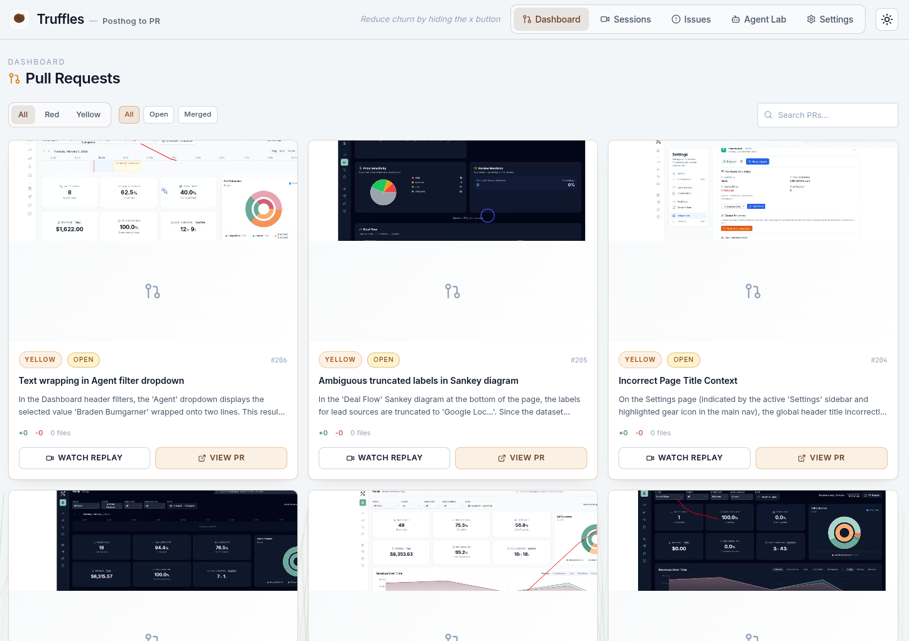
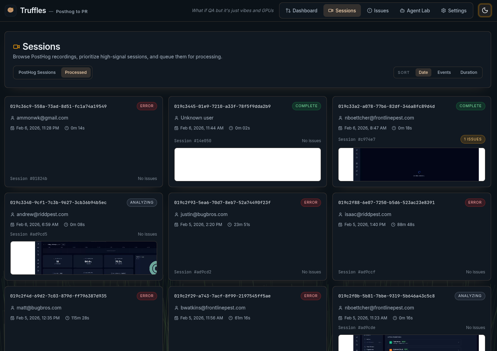
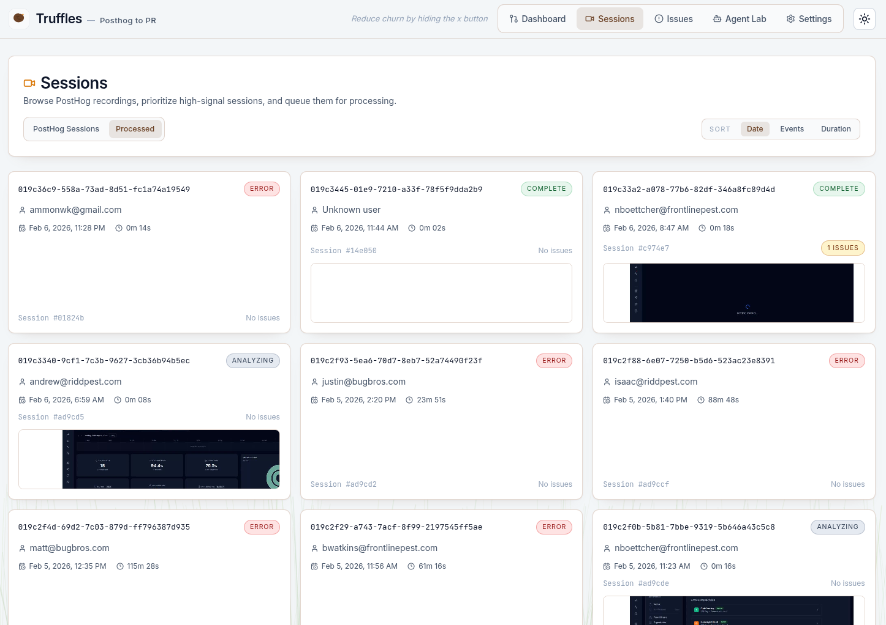
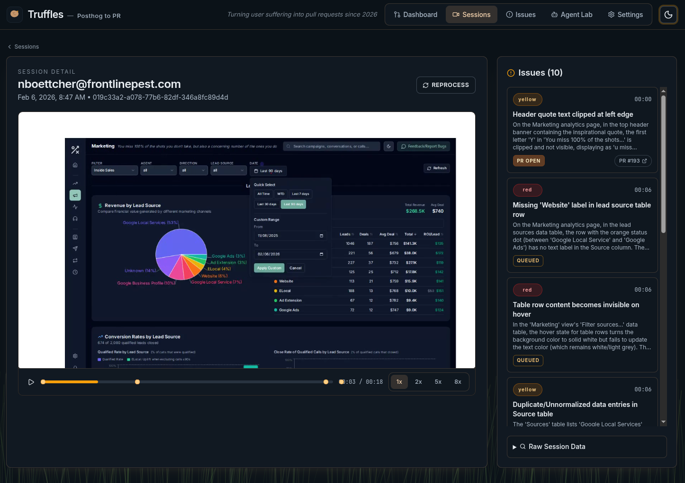
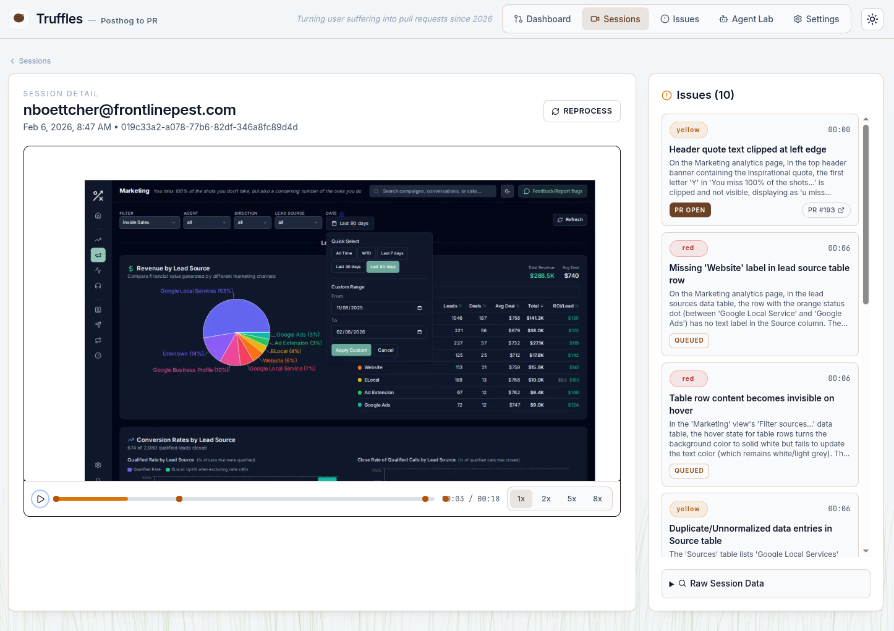
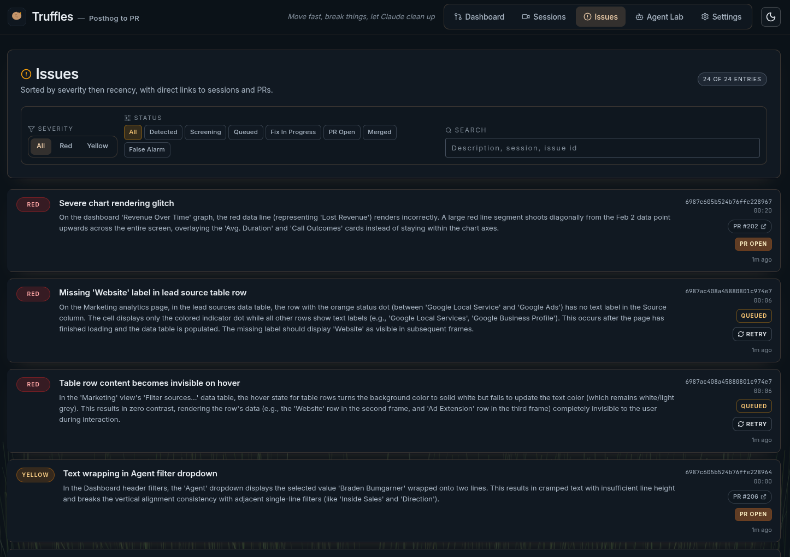
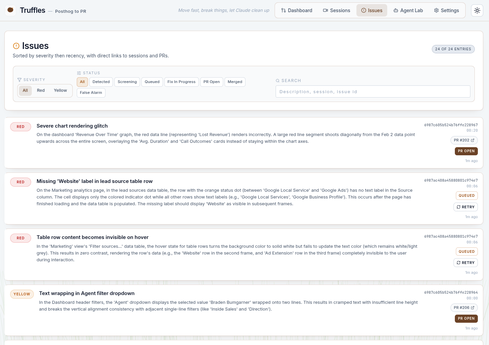
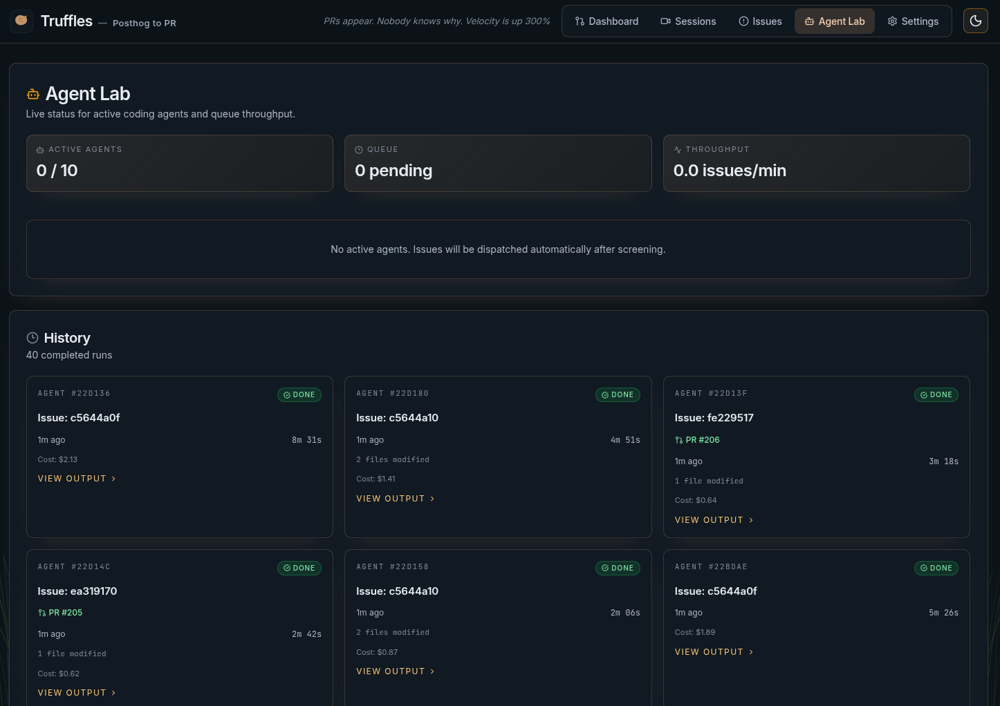
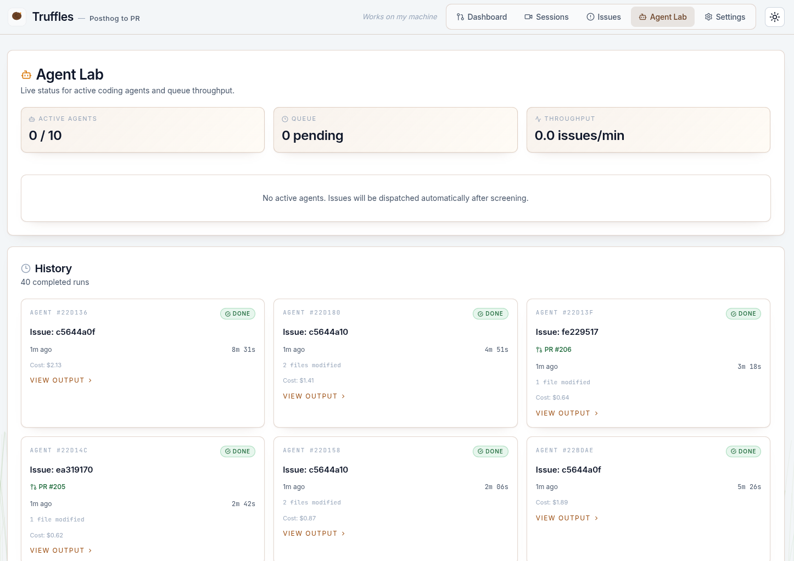

Autonomous bug detection and pull request generation. PostHog session recordings in, GitHub PRs out.
Ammon Kunzler · CS 329 DevOps · View on GitHub
Session recording tools like PostHog generate thousands of replays. Teams record everything but review almost nothing. Bugs hide in plain sight—visible in recordings that nobody watches. The data exists. The human bandwidth doesn't.
What if you could point an LLM at every session recording and have it detect UI bugs, filter out noise, and then hand off the real issues to a coding agent that opens a PR? That's Truffles.
Pulls session recordings from PostHog, renders rrweb events into MP4 video via a headless Chromium pipeline, and uploads to S3.
Dual-model vision analysis (Kimi K2.5 + Gemini 3 Pro) examines video frames. A separate model reviews console errors and network failures. Results are deduplicated and screened.
Claude Code agents receive verified issues, check out isolated worktrees, locate the bug in code, implement fixes, and open PRs on GitHub—or report false alarms.
PostHog sessions flow through a rendering and analysis pipeline. Issues that survive screening are handed to a coding agent that opens a PR.
Successful agents create pull requests linking back to the original session recording and issue. A human reviews and merges.


Turborepo monorepo. Express API handles orchestration, WebSocket streaming, and agent lifecycle. React frontend provides real-time observability. Everything runs on a single process.
┌─────────────────────────────────────────────────────────────────────┐ │ PostHog Cloud │ │ session recordings (rrweb events, metadata, console logs) │ └──────────────────────────────┬──────────────────────────────────────┘ │ poll / sync ▼ ┌─────────────────────────────────────────────────────────────────────┐ │ Truffles API (Express + WebSocket) │ │ │ │ ProcessingManager render rrweb → mp4 via Playwright + ffmpeg │ │ │ │ │ ▼ │ │ AnalysisManager dual-model vision + session data analysis │ │ │ deduplication + screening │ │ ▼ │ │ AgentManager Claude Code SDK → worktree → code → PR │ │ │ └────────┬──────────────────┬────────────────────┬────────────────────┘ │ │ │ ▼ ▼ ▼ MongoDB AWS S3 GitHub sessions videos PRs on issues frames target repo agents thumbnails │ ▼ ┌─────────────────────────────────────────────────────────────────────┐ │ Truffles Web (React + WebSocket) │ │ sessions · issues · agent lab · PR review · dashboard │ └─────────────────────────────────────────────────────────────────────┘
PostHog sessions are synced into Truffles. The Sessions page lists all available recordings with metadata—duration, user, active time. An admin selects sessions to process.


rrweb events are replayed inside a headless Chromium browser, captured at 4x speed, and encoded to MP4 via ffmpeg. Two vision models (Kimi K2.5, Gemini 3 Pro) examine extracted frames while a separate text model reviews console errors and network failures. Results are deduplicated against recent issues and screened through learned suppression rules to filter noise.


Verified issues are surfaced with severity levels (red for critical, yellow for minor), LLM reasoning, and links back to the source session. Each issue includes the model's explanation of what it found and why it matters.


A Claude Code agent receives the issue, checks out an isolated git worktree, and works through phases: verify the bug exists in code, plan the fix, implement it, and run lint/typecheck. If it can't find related code, it reports a false alarm instead of guessing. Output streams in real time to the Agent Lab.


Successful agents create a pull request on the target repo with a clear description of the issue and fix. The Truffles dashboard shows all PRs with inline diffs, issue context, and links to GitHub for final human approval.
Truffles replaces manual session review with LLM-powered analysis. It watches every recording, not just the ones a human happens to check. This is the logical next step beyond traditional automated testing—testing the actual user experience, not just code paths.
Detected issues flow directly into the PR workflow. Agents create branches, implement fixes, and open PRs with full context. The human role shifts from "find and fix" to "review and merge"—a fundamentally different feedback loop.
PostHog session data (console errors, network failures, DOM events) feeds into a structured analysis pipeline. This is production observability applied to QA—treating user sessions as telemetry rather than debug artifacts.
The suppression rule system learns from mistakes. When an agent reports a false alarm, the pattern is stored and used to filter future detections. This mirrors alert fatigue management in production monitoring—a core DevOps discipline.
Replaying rrweb events in a headless browser, capturing frames, and encoding to MP4 required handling browser lifecycle, timeline compression, memory limits, and timeout enforcement. The rendering pipeline went through several iterations.
The individual API calls are simple. Chaining them into a reliable pipelines, with deduplication, screening, false alarm detection, and agent handoffs, is where the real engineering lives. Each stage needs clear contracts and failure modes.
Without an explicit "false alarm" option, coding agents will make speculative changes to justify their existence. Similarly, give agents a "Dev feedback" field to let them complain if you set them up for failure.
"State of the Art" is a constantly moving target with LLMs. Kimi K2.5 and Gemini 3 Pro both show excellent vision benchmark results, I didn't know which would perform better. I honestly never got around to seeing which I liked better, they're both still fighting with every video analyzed.
Watching an agent work in real time—seeing it read files, reason about the bug, and write a fix—is fundamentally different from waiting for a result. Real-time observability made debugging the agents themselves much faster. Also it gives me hope that I can turn it off before it goes too off the rails. Realistically, nobody will be watching it when something goes wrong, and I'll have to live with the YOLO permissions I gave it.
Running multiple coding agents concurrently requires complete filesystem isolation. Git worktrees solved this elegantly—each agent gets its own checkout of the repo on its own branch, with automatic cleanup of orphaned worktrees. Ports still might fight if they try to run their code, I haven't solved that problem yet.